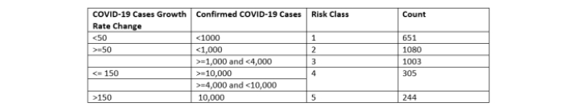
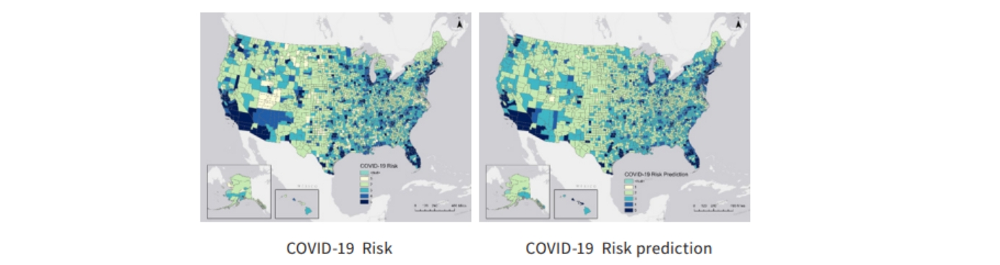
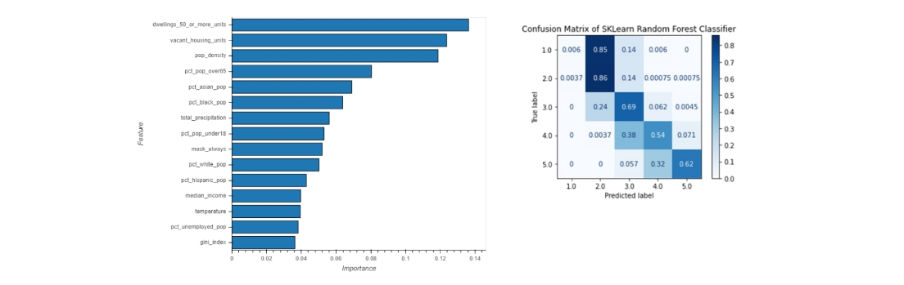
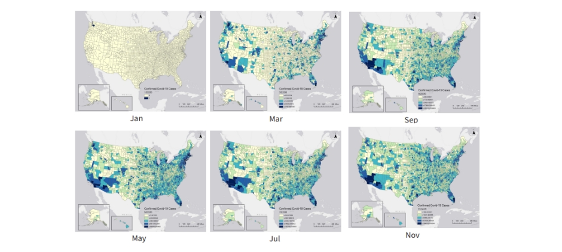
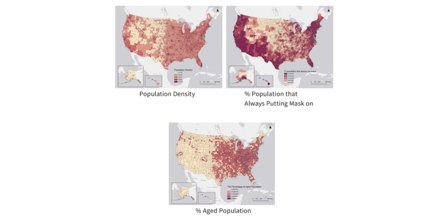
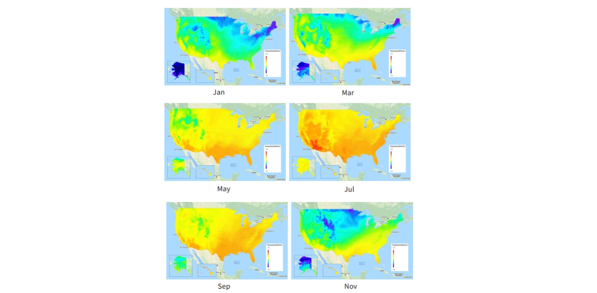

Spatial-Temporal Analysis of COVID-19 Risk in US Counties
This is the final project I worked for course Geospatial Software Design in 2020 Fall.
Introduction
Numerous studies have demonstrated a correlation between the dynamics and spread of COVID-19 incidence and the geo-environmental and demographic characteristics of specific regions. For example, a study conducted by Abolfazl Mollalo, Behzad Vahedi et al. (2020) suggests a strong positive relationship between COVID-19 incidence and factors such as median household income, income inequality, percentage of nurse practitioners, and percentage of black females. Additionally, research from China has shown that meteorological factors may also influence the spread of COVID-19, particularly through interactive effects between daily temperature and relative humidity on incidence rates. In fact, lower temperatures have been associated with an increased risk of daily SARS incidence, with a reported 18.18 times greater likelihood at colder temperatures (Hongchao Qi, Shuang Xiao et al., 2020).
Given these findings, there is increasing interest in understanding the spatial-temporal distribution characteristics of COVID-19 incidence in the USA. This project aims to address this gap by analyzing data from January to December and employing a random forest classifier to predict the health risk posed by COVID-19 for each county. Furthermore, the project seeks to explore the correlations between demographic, socio-economic, and environmental variables with the risk level associated with COVID-19. By taking a geospatial perspective, this project aims to identify the key factors contributing to an increased risk of COVID-19 for counties across the USA.
Through these analyses and investigations, this study hopes to provide valuable insights into the spatial patterns and determinants of COVID-19 transmission in order to inform targeted public health interventions and mitigation strategies. By better understanding how various factors influence COVID-19 risk at both local and regional scales, it may be possible to develop more effective measures for controlling transmission and reducing overall case burden within communities.
Data
The data used in this project was collected from various reliable sources. The daily count of confirmed COVID-19 cases for each county in the USA was obtained from the official report released by the Coronavirus Resource Center of Johns Hopkins University. The dataset can be found at: https://github.com/CSSEGISandData/COVID19/tree/master/csse_covid_19_data/csse_covid_19_time_series. The data covers the period from January 22, 2020, when the first COVID-19 case in the US was reported, to November.
Demographic and socio-economic data were collected from the 2018 American Community Survey 5-Year Estimates dataset. This dataset includes information such as total population, population breakdown by race and age groups, median income, housing units, unemployment rate, and population commuting by public transportation.
Mask-use frequency data was retrieved from the Google BigQuery public dataset. This dataset provides insights into mask usage patterns across different regions.
Geographical data for US counties was obtained from the United States Census Bureau. These files provide accurate boundaries and geographical information for mapping purposes. The data is available at: https://www.census.gov/geographies/mapping-files/time-series/geo/tiger-line-file.html.
By combining these diverse datasets, this study aims to provide a comprehensive analysis of various factors influencing COVID-19 trends at a county level in the USA.
Methodology
To process the demographic and socio-economic data, three custom tools were developed using Arcpy in ArcGIS.
The first tool was created to merge values from different fields. In certain cases, the demographic data contained code fields such as regional codes, city codes, and county codes. However, when these codes were imported into ArcGIS, they were automatically converted to integer format, resulting in the loss of leading zeros. This tool addressed this issue by converting the integer format back to string and restoring the leading zeros, ensuring accurate processing of code data.
The second tool focused on calculating population density based on user-provided population data. It utilized the supplied population information to compute a density value for each county.
For COVID-19 risk prediction, a random forest model was employed. Random forest is an ensemble learning method that combines multiple decision trees trained on parallel subsets of features from the training dataset. The class label for the test dataset is determined by aggregating the votes of these decision trees. Prior to implementing the random forest classifier, each county's COVID-19 risk was evaluated based on two factors: the growth rate of COVID-19 cases over the last three months and the total number of confirmed cases. The growth rate formula used in this study is defined as follows:
COVID-19 Cases Growth Rate = Confirmed Cases in November - Confirmed Cases in September.
Using this formula, counties were assigned risk grades according to their respective growth rates and total case numbers.
Finally, an ArcPy-based tool in ArcGIS Pro was developed to classify all counties based on their calculated risk levels.
Through these methodological approaches, this study aimed to provide accurate and informative analyses regarding COVID-19 risks at a county level using demographic, socio-economic, and pandemic-related data.
Findings
The findings highlight the significant influence of various demographic and socio-economic factors on the transmission and spread of COVID-19. The analysis identified key factors such as population density, residential density, the proportion of elderly population, mask-wearing behavior, and meteorological conditions that can be utilized to predict the risk of COVID-19 in different counties.
Notably, the random forest classifier constructed based on these prediction variables tends to overpredict the Midwest counties with less COVID-19 risk. This finding underscores the importance of considering population density as a critical factor in COVID-19 risk prediction. Urban areas with high population density exhibited higher numbers of COVID-19 cases and faster growth rates.
Furthermore, residential density emerged as another significant predictor of COVID-19 health risks. Counties with a greater number of housing units faced increased susceptibility to the virus due to higher potential for exposure within shared facilities such as elevators. Consequently, adherence to mask-wearing and maintenance of social distancing measures is imperative in areas with high population and residential densities.
Moreover, the research emphasizes the importance of considering the percentage of individuals aged 65 and older, as well as ethnic minority populations when assessing COVID-19 risk profiles. These factors align with previous studies conducted by the CDC, which found that individuals aged 65 and older face a mortality rate 90 times higher than younger demographics. Additionally, Black, Hispanic, and non-Hispanic American Indian or Alaska Native populations exhibited hospitalization rates over 2.5 times higher than non-Hispanic white individuals. These disparities reflect underlying socio-economic factors wherein many people from racial minority groups often hold jobs that involve direct interaction with the public without remote work options.
The temperature has an impact on the spread of COVID-19. Cold weather conditions can create an environment where the virus can remain viable for longer periods and be more easily transmitted between individuals. Additionally, colder temperatures may lead to people spending more time indoors in close proximity, which can increase the risk of transmission. Conversely, higher temperatures may have a mitigating effect on the spread of the virus. Warmer weather potentially reduce the viability and transmission efficiency of the virus.
Based on these findings, targeted interventions should be implemented in areas characterized by high population density and residential density. Efforts should focus on promoting consistent mask usage and enforcing social distancing measures. Additionally, strategies addressing healthcare access inequalities among racial minority populations will play an essential role in reducing overall COVID-19 growth rates.
Full Report